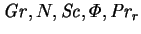
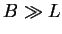
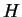

Several investigators have approached the problem of vapour transport across gas-filled enclosures over the last three decades, including Klosse and Ullersma (1973), Hu and El-Wakil (1974), Meyer and Kostin (1975), Jhaveri et al. (1981), Greenwell, Markham & Rosenberger (1981), Jhaveri and Rosenberger (1982), Bejan (1985), Keey and Wee (1985), Trevisan and Bejan (1987), Ranganathan and Viskanta (1988), Nelson and Wood (1989), Wee, Keey and Cunningham (1989), Lin, Huang and Chang (1990), Weaver and Viskanta (1991a-c), Béghein, Haghighat and Allard (1992), Costa (1997) and Rosenberger et al. (1997). Their contributions are summarized in §3.3.
One of the most obvious things to emerge from this body of work is that no one model has been adopted. This is in spite of the fact that with a very few exceptions, such as the question of diffusive slip at solid boundaries (§3.2; Sparrow, Nunez & Prata 1985; Ranganathan & Viskanta 1988), the fundamental governing partial differential equations and boundary conditions are very well established (e.g. Bird, Stewart & Lightfoot 1960). These equations are extremely complex: apart from their essentially nonlinear and coupled nature, each of the coefficients (representing thermophysical properties, such as diffusivity or viscosity) depends on the local temperature, vapour concentration and pressure. Moreover, the property variation is different for every combination of gas and vapour and is usually unknown.
There are three main reasons for the simplification of these equations:
As mentioned above, the models have tended to increase in complexity over time, and although this has occasionally led to better agreement with experiment (e.g. Rosenberger et al. 1997), it does not necessarily improve general understanding of the physics. An example of this is that by including property variation in the numerical model (e.g. Rosenberger et al. 1997; Weaver & Viskanta 1991a) the results become limited to the particular gas-vapour pair considered. If, as in the case of Rosenberger et al. (1997), this is octofluorocyclobutane-iodine, this is limiting indeed. Such detailed modelling has its place of course, especially in the refinement of designs for industrial processes, and can only be expected to proliferate in the future, but it cannot substitute for a general theoretical framework; indeed, it was admitted in one such study that `the large number of parameters in the present study...result in an analysis which is hard to generalize' (Weaver & Viskanta 1991a).
Another reason that no one model has yet emerged into general acceptance is, paradoxically, due to the single greatest simplifying feature of the problem--the analogy between heat and mass transfer. The advection of thermal energy and the advection of species are in many ways analogous, as are the processes of conduction and diffusion, but there are fundamental differences. For example, interfacial mass transfer of a vapour from a mixture with a noncondensable gas to a condensed phase implies a net normal velocity. This has no parallel in the problem of heat transfer between a fluid and a solid. Treating mass transfer like heat transfer, then, must be done with caution. It is acceptable in the limit of vanishingly dilute transferred species, and so was quite appropriate in the study of Wee et al. (1989) of humid air in cold climates (New Zealand), where the mass fraction of water vapour rarely exceeds 1%, but all too often the analogy's `indiscriminate application...has lead to some rather amusing conclusions' (Rosenberger & Müller 1983). This point has been made many times in the past, most demonstratively by Spalding (1963), but unfortunately confusion continues. One of the foci of the present work is to identify and clarify these similarities and differences and to find quantitative criteria for how dilute the vapour must be before the finite mass transfer rate effects of transpiration and species interdiffusion of enthalpy become insignificant. This is dealt with in chapter 6. In short, the analogy between heat and mass transfer is best used as a preamble to the catalogue of its exceptions.
The first task of this project is the development of a general model.
To a large extent this has already been
accomplished (McBain 1998),
though it was later refined (McBain & Harris 1998; Suehrcke & McBain 1998).
The latest version, derived in chapter 2,
is general enough to include all
the essential phenomena considered by the investigators listed in the
first paragraph of this section, while containing the minimum number of
parameters. Its form is a set of dimensionless
partial differential equations.
The field equations of the model include six dimensionless parameters:
 and
 . These are described in
§2.3.2.
. These are described in
§2.3.2.
The second task is to select various configurations and situations in
which to solve the equations of the model.
Having developed a model capable of representing a great variety of
flows, it is necessary to restrict the scope of the project.
My selection is guided by
the building wall cavity problem, as well as the available solution
techniques. The cavity problem suggests that the most important
geometry is the vertical
cuboid. One opposing
pair of the vertical faces is taken to be the vapour source and sink
while the other pair, along with the floor and ceiling, is taken to be
solid, i.e. nonslip and impermeable. Such a geometry is described by
one characteristic length,
One opposing
pair of the vertical faces is taken to be the vapour source and sink
while the other pair, along with the floor and ceiling, is taken to be
solid, i.e. nonslip and impermeable. Such a geometry is described by
one characteristic length,  , the distance between the source and
sink, and two dimensionless parameters,
, the distance between the source and
sink, and two dimensionless parameters,  and
and  , the
vertical and spanwise aspect ratios.
, the
vertical and spanwise aspect ratios.
The physics of the problem specifies two principal directions--that of the gravitational force and that of the normal to the source and sink walls--and two directions define a parallel family of planes (parallel to the bounding walls in the spanwise direction). Consequently, much of the research into vapour transport through gas-filled enclosures, including all of the studies cited in the first paragraph except that of Rosenberger et al. (1997), have assumed the flow to be planar. That is, all quantities are assumed to be independent of the location in the third dimension. In making this two-dimensional assumption, these investigators were in large part following in the tradition of those who study the analogous single fluid heat transfer problem:
In the remaining direction, at right angles to the plane of the sketch, the air space is regarded as extending to infinity. All boundary conditions will be assumed uniform in this latter direction, and the convective motion generated by buoyancy forces can then be assumed to be two-dimensional, lying in the plane of Fig. 1. (Batchelor 1954)
If  and , the motion will be nearly everywhere two-dimensional, being confined to planes=const. (Elder 1966)
This assumption was dramatically disproved by the numerical solutions of Mallinson and de Vahl Davis (1973, 1977) which clearly showed spanwise flow throughout the entire cavity. This phenomena will also occur in the vapour transport problem, and will be returned to later. More recent work on the pure fluid heat transfer problem has suggested that three-dimensional flow may also occur by instability of the two-dimensional flow, even if the cavity were unbounded in the third dimension (Chait & Korpela 1989).
So, while the reality of three-dimensional fluid motion should be kept
firmly in mind, it is nevertheless profitable to first consider one-
and two-dimensional problems. This may be done by restricting
attention to flows for which the characteristic length in any
direction is more or less equivalent to the extent of the cavity in
the same direction, i.e. laminar unicellular flows, and then
examining the limit as one or two of these dimensions tend to infinity
or zero. In terms of the governing parameters, the restriction to
laminar unicellular flows implies a small combined Grashof number,
 . Physically, it means that the cavity and the buoyancy
forces must be small. A guide to how small can be obtained from the
analogous pure fluid heat transfer problem: for a cavity large in the
vertical and spanwise directions, it means a temperature difference
between (heat) source and sink of less than 40K for a 10mm gap, or
less than 5K for a 20mm gap (Gill & Davey
1969).
. Physically, it means that the cavity and the buoyancy
forces must be small. A guide to how small can be obtained from the
analogous pure fluid heat transfer problem: for a cavity large in the
vertical and spanwise directions, it means a temperature difference
between (heat) source and sink of less than 40K for a 10mm gap, or
less than 5K for a 20mm gap (Gill & Davey
1969).
Also, attention here is restricted to steady-state problems. The rationale for this is that, considering the building wall cavity, while the wall as a whole would be subjected to variable thermal and hydrological conditions according to changes in the weather and the diurnal and seasonal cycles, the effect of these on the fluid in the cavity will be attenuated to a large degree by the capacitance of the solid and porous solid parts of the building envelope. Further, in order to solve evolution problems, initial conditions must be stipulated, and there is no obvious choice of these for the building wall cavity; the step change in wall temperature contemplated by Patterson and Imberger (1980; see also Kwak & Hyun 1998) must be rejected as inappropriate and unphysical, particularly in view of the extreme sensitivity of the results to the initial conditions: compare the studies of Ivey (1984) and Schladow, Patterson and Street (1989). Unsteady fluid flow is of course possible even with steady boundary conditions, however this is probably best understood from the coign of vantage of the stationary flow (Gadoin & Le Quéré 1998). In restricting the scope in this manner, I am also adhering to the Cartesian principle of tackling the simplest problems first (Descartes 1911, p. 14).
Bearing this now rather lengthy list of restrictions in mind, let us return to the problem.
The geometry of building wall cavities is in general characterized by a
large vertical aspect ratio,  ;
i.e. they are much taller than they are
wide. This suggests the first problem for the study--the limiting
behaviour as
;
i.e. they are much taller than they are
wide. This suggests the first problem for the study--the limiting
behaviour as
 . This is essentially a
one-dimensional problem: the velocity, temperature and concentration
varying in space only as a function of the position relative to the
source and sink wall planes. The solution is obtained in closed
form in §4.4.
It shows some similarities with the analogous pure
fluid heat transfer problem (Jones & Furry 1946) but
also noticeable effects peculiar to mass transfer: transpirational
interfacial velocity and interdiffusive enthalpy flux. The contribution
of the `latent heat' to the total energy flux is also
staggering--consider the numerical example from Yan, Tsay and Lin
(1989), which is used in §4.5 for validation:
the total energy transfer rate, including mass transfer
effects is 8.849 (Yan et al. 1989) or 8.851 (McBain 1998; §4.5)
times that which would be predicted on the basis of simple heat transfer.
This example shows the potential importance of mass transfer in the thermal
performance of building wall cavities.
. This is essentially a
one-dimensional problem: the velocity, temperature and concentration
varying in space only as a function of the position relative to the
source and sink wall planes. The solution is obtained in closed
form in §4.4.
It shows some similarities with the analogous pure
fluid heat transfer problem (Jones & Furry 1946) but
also noticeable effects peculiar to mass transfer: transpirational
interfacial velocity and interdiffusive enthalpy flux. The contribution
of the `latent heat' to the total energy flux is also
staggering--consider the numerical example from Yan, Tsay and Lin
(1989), which is used in §4.5 for validation:
the total energy transfer rate, including mass transfer
effects is 8.849 (Yan et al. 1989) or 8.851 (McBain 1998; §4.5)
times that which would be predicted on the basis of simple heat transfer.
This example shows the potential importance of mass transfer in the thermal
performance of building wall cavities.
The infinite plane layer solution, just discussed, is incompatible with a solid floor and ceiling. To see whether or not it could still describe a finitely tall cavity, at least sufficiently far from the ends, numerical solutions to the two-dimensional problem were obtained using the augmented Lagrangian algorithm with the finite element package Fastflo (CSIRO 1997; McBain 1997a; §5.1). The results (McBain & Harris 1998; §5.2) show that even if the vertical aspect ratio is as low as 5, the two-dimensional numerical solution agrees with the analytic one-dimensional solution to better than 1% in all the solution variables (velocity components, temperature, vapour mass fraction and pressure).
The next extension is again suggested by building wall cavities.
Unlike the geometries imagined by Batchelor (1954) and Elder (1966),
these do not extend indefinitely in the third-dimension. For example,
the cavities in one locally popular variety of hollow concrete block
have a span less than 20% longer than their breadth (Cement and
Concrete Association of Australia 1976, p. 2.7). In
chapter 7, the same asymptotic procedure as used for the
infinite plane fluid layer problem is applied to the limit
 with
with  held fixed.
It turns
out that an effectively two-dimensional region does exist midway between
the end-walls if the spanwise aspect ratio is greater than about 1.7. For
smaller spans, their effect is felt throughout.
held fixed.
It turns
out that an effectively two-dimensional region does exist midway between
the end-walls if the spanwise aspect ratio is greater than about 1.7. For
smaller spans, their effect is felt throughout.
One of the interesting features of the bounded sections solution is that
there is no component of velocity in the spanwise direction. This calls
into question the universality of the conclusion of de Vahl Davis
(1998; quoted in full on p.  ).
This conclusion, however, was only based on a
finite number of numerical solutions. The contradiction can be resolved by
shifting from the cuboid to a topologically equivalent geometry for which
closed-form solutions can be found--the sphere. This problem has been treated
before by Lewis (1950) and Ostoumov
(1958), who both, however, wrongly concluded that the
flow would be limited to planes containing the directions of gravity and
heating. The asymptotic expansion for small Grashof numbers
replicates and explains many of the flow features observed
numerically by
Mallinson and de Vahl Davis (1973, 1977) and experimentally by Morrison and
Tran (1978). In particular, it can explain
why no spanwise flow need be expected in a tall but bounded cavity, and
strongly suggests that de Vahl Davis's (1998)
conclusion that the spanwise flow tends to a constant fraction of the
primary flow as the Grashof number tends to zero is false.
).
This conclusion, however, was only based on a
finite number of numerical solutions. The contradiction can be resolved by
shifting from the cuboid to a topologically equivalent geometry for which
closed-form solutions can be found--the sphere. This problem has been treated
before by Lewis (1950) and Ostoumov
(1958), who both, however, wrongly concluded that the
flow would be limited to planes containing the directions of gravity and
heating. The asymptotic expansion for small Grashof numbers
replicates and explains many of the flow features observed
numerically by
Mallinson and de Vahl Davis (1973, 1977) and experimentally by Morrison and
Tran (1978). In particular, it can explain
why no spanwise flow need be expected in a tall but bounded cavity, and
strongly suggests that de Vahl Davis's (1998)
conclusion that the spanwise flow tends to a constant fraction of the
primary flow as the Grashof number tends to zero is false.